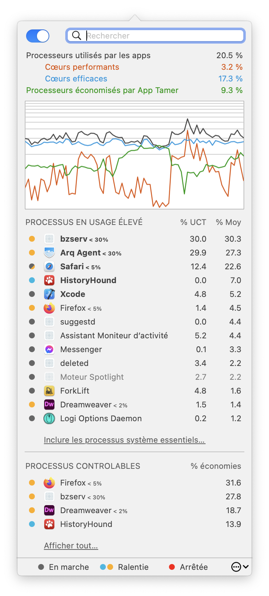

Aide App Tamer
Aide App TamerIntroduction

App Tamer concentre votre puissance de calcul et prolonge l'autonomie de la batterie
App Tamer apprivoise les applications qui mangent le temps de traitement et qui réduisent l’autonomie de façon excessive sur votre Mac. Certaines applications, en particulier les navigateurs Web et les applications Adobe, continuent d'exécuter des tâches ou des animations même lorsqu'elles sont inactives en arrière-plan. App Tamer les ralentit automatiquement ou les met en pause à la place, concentrant votre processeur sur ce qui est le plus à l'avant et prolongeant l'autonomie de la batterie si vous travaillez sur un ordinateur portable.
App Tamer facilite les choses
Bien que certains utilitaires vous permettent de gérer la priorité ou d'arrêter manuellement les processus, App Tamer est unique, car il gère automatiquement les applications pour vous. Il ralentira ou arrêtera une application lorsque vous passerez à une autre, puis la redémarrera automatiquement lorsque vous cliquez dessus ou que vous la sélectionnerez dans le Dock. C'est assez pratique pour que vous puissiez l'utiliser tout le temps.
Quelques clics suffisent
App Tamer comprend une interface utilisateur utile et claire pour gérer les applications en cours d'exécution, montrant le pourcentage moyen de vos processeurs utilisés par chacun d'eux. Il suffit de cliquer sur une application pour voir les options permettant de réduire sa puissance de traitement et sa consommation d'énergie.
App Tamer est configurée pour réduire automatiquement l'utilisation du processeur et de la batterie de Safari, Firefox, Google Chrome, Spotlight, Time Machine, Photoshop, Illustrator, Word et de nombreuses autres applications.